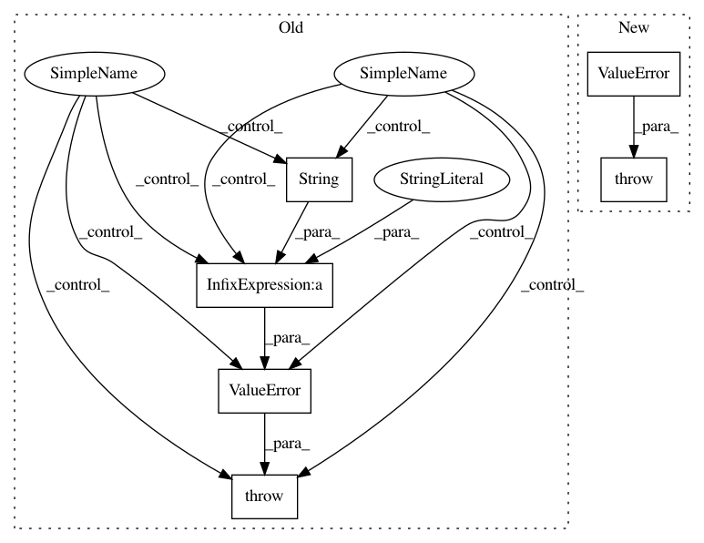

491868d5bb9c73324cd7ec25f06d1f3499f01072,dipy/align/imaffine.py,AffineMap,_apply_transform,#AffineMap#Any#Any#Any#Any#Any#Any#Any#,146
Before Change
elif dim == 3:
transform_method = vf.warp_3d_affine
else:
raise ValueError("Unknown interpolation method: "+str(interp))
// Compute the transform from sampling grid to input image grid
if apply_inverse:
aff = self.affine_inverse
After Change
// Verify valid interpolation requested
if interp not in _interp_options:
raise ValueError("Unknown interpolation method: %s" % (interp,))
// Obtain sampling grid
if sampling_grid_shape is None:
if apply_inverse:
In pattern: SUPERPATTERN
Frequency: 4
Non-data size: 6
Instances
Project Name: nipy/dipy
Commit Name: 491868d5bb9c73324cd7ec25f06d1f3499f01072
Time: 2015-07-16
Author: jomaroceguedag@gmail.com
File Name: dipy/align/imaffine.py
Class Name: AffineMap
Method Name: _apply_transform
Project Name: nilearn/nilearn
Commit Name: a7a171748348898e190ac584d47cbf32ffe68500
Time: 2015-11-29
Author: dkamalakarreddy@gmail.com
File Name: nilearn/regions/region_extractor.py
Class Name:
Method Name: _threshold_maps
Project Name: GPflow/GPflow
Commit Name: acc533ac66fa4d19420a36006ece53a440d03761
Time: 2018-11-05
Author: art.art.v@gmail.com
File Name: gpflow/conditionals/util.py
Class Name:
Method Name: base_conditional
Project Name: GPflow/GPflow
Commit Name: acc533ac66fa4d19420a36006ece53a440d03761
Time: 2018-11-05
Author: art.art.v@gmail.com
File Name: gpflow/conditionals/util.py
Class Name:
Method Name: fully_correlated_conditional_repeat